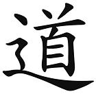
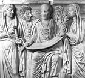

This page is a branch from our A Pagan Reality page. Its purpose is to explain concepts that are very important to many Pagans, recognized and accepted by most, and recognized but thought inappropriate to work with by others. Skeptics may also find this page useful so they can know what their friends are talking about. As with our other pages, it is not static, and will, like the other pages on this site, be updated and expanded as time and knowledge permit.
Overview
It has been only since the late 20th century that Esotericism, the study of the entire broad field of religious and philosophical thought and practice worldwide, has become accepted as legitimate study in Western academia. Previously, there had only been specialties. This is now an expanding field of study.
Students of Esotericism are divided into two camps. In anthropology, the two camps are: studying a culture from without, and studying it from full immersion within. Esotericism also includes those who study it from without, and those who study it through full immersion in thought and practice. Both are right, neither is wrong, and they have much to offer each other.
Traditional Esotericism divided reality into two realms, the lower Microcosm (where we live) and the higher Macrocosm (where the Gods and other spiritual beings live). The Hermetic statement, "As above, so below, but in different form", references this relationship. Western Esoteric study has now introduced a new concept: the Mesocosm, the middle realm where the human Microcosm interfaces with the Macrocosm. It is to this middle realm that study of Subtle Bodies belongs.
Paganism in the Mesocosm
Some Pagans reject working with the Subtle Bodies, considering it an invasion of the territory of the Gods. They prefer to maintain a strictly devotional practice. Others, both Theistic and Non-Theistic, are very open to this experience, and adopt concepts and practices from Hinduism, Yoga, Buddhism, Sikhism (Mystic Islam), Taoism, Western Hermeticism, and African folk religion, often in a "mix and match" sort of way (eclecticism).
There are some signs this very scattered field will eventually coalesce into a broad Western esoteric format. It is likely, though, like Paganism itself, to remain wonderfully diverse.
The best known formats in the West stem from Hinduism and Buddhism, including Yogic and Tantric practices from both. In these practices, the objective of reaching into the esoteric realms and the Subtle Bodies is to achieve liberation from the realm of the physical body. This is through various meditative disciplines, and understanding the relationship amongst the bodily energy centers (chakras) and the Subtle Bodies.
On the other hand, Pagans are generally very Earth centered, so the Taoist approach is relevant. It emphasizes extending consciousness into the subtle realms, while still firmly rooted in the Earthly realm.
A Quick Once-Over
All of the religions and philosophies that deal with Subtle Bodies are very complex, and take considerable study to understand. All we can do here is give a very brief description of their approach, necessarily incomplete and imperfect. For study of any of them that may interest you, there are many books written by people who have been immersed in them and understand them well.
All of the religions and philosophies mentioned here are far and away broader than our discussion here, but here we only offer a brief comparison of concepts of the Subtle Body(s). For the serious student, there is enough literature to fill a library on each of them.
Hinduism
 There is no "Hinduism". That's a name of convenience applied by the British
during the Raj, to lump together many loosely related schools and practices.
The oldest texts are the Vedas, transmitted orally from around 1700 BCE, but
many schools of "Hinduism" do not accept the Vedas.
There is no "Hinduism". That's a name of convenience applied by the British
during the Raj, to lump together many loosely related schools and practices.
The oldest texts are the Vedas, transmitted orally from around 1700 BCE, but
many schools of "Hinduism" do not accept the Vedas.
The concepts and practices of any of these schools are complex and would require a book apiece to give decent coverage, and there are such books. Here we will just name a few concepts you will hear talked about. Further investigation is up to you.
The attitude of Hinduism regarding the Subtle Body is most clearly delineated in Tantric Yoga. The physical body contains a number of energy centers, called Chakras. They are arranged along the spine from the base to the final one at the top of the head. These are connected by Nadis, energy paths. There may also be subsidiary Chakras in other parts of the body.
The Chakras are named for organs and body parts, but are not identical with them. Each Chakra is matched to a layer of the Subtle Body, called a Kosa. The highest Chakra is matched to the outermost and least dense Kosa.
The main objective of Hinduism is to be liberated from the physical body, passing up through the Chakras and through layers of the Subtle Body, finally becoming one with Divinity, liberated, and escaping the cycle of rebirth. This is done through various practices of study, ethics, and meditation.
Yogic body positions and breathing exercises are carefully tuned to the various Chakras, to aid in "opening" them through meditation and passing through the related Kosas.
The number of major Chakras varies with school, from 4 to 8, with up to
88,000 minor Chakras. The system that has been widely accepted in the West
includes 7 major Chakras, and perhaps a few minor ones, especially in the
hands.
Buddhism
Buddhism is largely derived from non-Vedic Hinduism. There are three main schools of Buddhism: Theravada ("Pali Canon": Sri Lanka and mainland Southeast Asia, except Vietnam), Mahayana ("Chinese Buddhism" and Zen: East Asia, Vietnam, Singapore), and Vajrayana ("Tibetan Buddhism"), thought by some to be a variety of Mahayana.
As with various schools of Hinduism, the main goal of spiritual advancement
in all Buddhist schools is to transcend the body and liberate oneself from the
circle of rebirth. This is mainly by meditative disciplines and passage
through the Chakras as one builds the Subtle Body that will transcend the
physical, and achieves Nirvana, annihilation of the self and union with
Divinity. Originally, Buddhism recognized four Chakras, but in later times
expanded to five.
Sufism
This is the mystic form of Islam, though many mainstream Muslims consider it to be "outside" of Islam. It is best known in the West for orders that include the Whirling Dervishes. Their dance is a form of meditation in motion, and to music. Traditionally it was restricted to men, but today, in some regions, women are also allowed to dance, and even mixed groups. Other Sufi orders do not use this form of meditation.
The Sufis recognize three components of the self: the nafs or lower "ego self", qalb or "spiritual heart", and the ruh the "higher self" which is without dimension and eternal, roughly equivalent to eternal soul. There is also a subtle body, the nasma, equivalent to an "astral body", which may hang around for some time after death of the physical body and departure of the eternal ruh.
Sufis recognize six subtle centers, latifas, concepts similar to
the Chakras of India, which the seeker purifies and passes through in order
from lowest to highest on the path to oneness with Allah. The methods, as
with other paths, are study and meditation.
Taoism
 Taoism is a syncretic religion including influences from Confucianism, Buddhism, Hinduism, and Animism. It differs from Buddhism and Hinduism in that, as one progresses into the higher realms, one keeps one's feet firmly on the ground. Progress is made by extending the consciousness rather than abandoning the body. The Earth is not rejected as suffering, but as a place to enjoy, much as in current Paganism and in ancient Egypt.
The mystical aspect of Taoism is tied directly in with Qigong, the medicinal and healing practice. It recognizes three Zones and three Energy Centers (Dantiens) in the human body, and a number of paths and minor centers.
The Heaven-linking zone is from about the nose to the top of the
head, where there is a port that can open to Baihui (Heaven, the
formless transcendent realm). This zone hosts the Upper Dantien.
The Earth-linking zone is from the navel on down, hosting the Lower
Dantien.
The Movable zone is between the other two zones, and can move
from the solar plexus to the heart. This zone includes the Middle Dantien
and is particularly coupled to the hands. The hands concentrate, amplify, and
direct energies, both outward and inward.
Taoist Meditation practice includes "Concentration", "Insight", and
"Ecstatic Excursions". The goal is to extend through the Zones and Dantiens and
achieve the "Body of Enlightenment", the Subtle Body or Transcendent Body, and
pass into the Baihui (Heaven), achieving immortality.
Neo-Platonism
 Plato (about 423-348 BCE) taught at a time when abstractions that had no physical form or place were becoming important concepts. The Neo-Platonists (about 232-485 CE) continued his teachings with elaboration on his themes. They had considerable influence on Christian, Islamic, and Judaic thought through the Middle Ages, and continue to influence philosophers to this day.
Neo-Platonism holds that there are three bodies, the Soul, the Subtle
Body (which may be in several layers), and the physical body. Whether the
Soul is eternal or just everlasting concerned the Neo-Platonists, but we
will not speculate on that here. The physical body was seen to have a set of
energy centers, similar in concept to the Chakras of Tantra, which formed a
sort of ladder to attainment and union with "The One". The path of achievement
in Neo-Platonism is more intellectual than in Tantra, through philosophical
contemplation.
Alchemy
Thought to have originated in ancient Egypt, Alchemy is a complex spiritual system that also applied chemical and metallurgic symbologies. Some alchemists were financed by nobles in hopes they would succeed in transmuting lead into gold, but the central pursuit of Alchemy was purification of the human body, mind, soul and spirit. There was also a strong devotion to healing.
There is little doubt that Western Alchemy accepted concepts of the Subtle Bodies, though there are difficulties in interpretation due to obscure terminology and symbology. All in all, Alchemy's map of the internal human structure is strongly parallel to Tantric Yoga, with 7 metals and 7 planets being similar concepts to the 7 Chakras. Other concepts are also notably parallel.
Psychoanalyst Carl Jung was intensely interested in Alchemy, especially
in its symbology, which he felt was aligned with his own system of archetypes.
Today, study and practice of the "Great Work" is carried on by the
International Alchemy Guild and by other students of Alchemy.
Kabbalah
This is a mystical Jewish interpretation of the relationships and paths of the energy centers of the sacred "Tree of Life". It appeared in the 13th century but probably incorporates elements of Jewish mysticism from several hundred years before.
During the Renaissance, Kabbalah was adopted into Western Hermeticism and integrated with elements from Tarot, Astrology, Alchemy, Neo-Platonism, Gnosticism, Tantra, and the Pagan pantheons. It has been, and continues to be used by many Western mystical orders and societies.
It is clear that the relationships between the energy centers and the
paths between them roughly parallel the Chakras and Nadis of Yogic Hinduism.
There is a "Lightning Bolt Path" from the bottom passing through every
Sephirah to Kether (the Crown). Of course Subtle Bodies are associated with
progress through the energies, and expand into the Divine when Kether is
achieved.
Theosophy, etc.
Theosophy (God Wisdom) and Anthroposophy (Human Wisdom) are spiritual movements founded in the late 19th century and early 20th century that still have considerable influence today. Some of their systems have been incorporated in various "New Age" practices. They maintain the human has multiple states (body, soul, spirit) and various Subtle Bodies.
Theosophy was a spiritual movement founded in New York in 1875 by Helena Blavatsky, Henry Olcott, and William Quan Judge. It's main principles come from Blavatsky's writings, particularly Isis Unveiled and The Secret Doctrine. Much of her doctrine was based on Hindu and Buddhist practices, and uses Indian terms, but not accurately, causing some confusion. She claimed she learned her material in Tibet from a brotherhood of spiritual masters, known as Mahatmas. She claimed it was a modern transmission of the "once universal religion" from deep in the human past.
Alice Baily and her husband Foster Bailey were expelled from the Theosophical Society and founded their own Lucis Trust in 1922, but maintained a lot of the Theosophic structures. She maintained her writings were telepathically dictated by a Tibetan master later identified as Djwal Khul. Her most important work was Esoteric Healing which is the basis for much of the New Age Healing movement. She was the first to declare the "Age of Aquarius" and use the term "New Age".
Rudolf Steiner, an Austrian philosopher, social reformer, architect,
esotericist, and claimed clairvoyant, also started with Theosophy. He broke
away in 1912, taking most of the German section of the Theosophical Society
with him. He declared his movement under the name Anthroposophy, and
replaced Blavatsky's terminology with Western terms, but kept much of the
structure. Many Steiner founded schools still exist, as do his theories on
biodynamic agriculture and anthroposophical medicine These have influenced
the New Age movement. Steiner claimed, as an advanced clairvoyant, he could
clearly see the shapes and colors of the Subtle Bodies and determine
character and emotional state from them.
"New Age" Spirituality
It must be noted that the term "New Age" is now a classification used by academics and journalists, and is rejected by most "New Age" participants. The name originally referred to the astrological precession of the equinox from the "Age of Pisces" to the "Age of Aquarius", which has happened, is happening, or about to happen, depending on calculations. This umbrella term continues to be used because no other term has arisen to define this extremely eclectic and extremely syncretic milieu, otherwise almost impossible to define at all.
Update 2021 June The validity of the Spiritual Wellness movement has come seriously into question, especially here in California, as many participants have "taken the Red Pill". That's code for having devoted themselves to the absurd conspiracy theories of Q Anon. Many in the movement who have retained their sanity have been saddened by having to cut off former friends to avoid the continuous spouting of absurdity. This was reported in detail in the Los Angeles Times, starting on page A1 June 25 2021.
"Spiritual but not Religious" is the fastest growing religious category in the United States, mostly at cost to mainstream Protestantism, but the Evangelicals are starting to take hits as well. A fair number of people in this category align with the "New Age" category to one degree or another. Diverse groups and practices of this grouping draw from every one of the other structures on this page, in various mixes, and from structures not included here as well.
That divinity is all encompassing, including humans (the divine within),
is a very common attitude, and that there are beings that are not of the
physical realm, especially "guides", who assist in healing work. Many are
into Energy Healing using the Subtle Bodies and Chakras, much of which
practice is loosely related to the patterns of Tantric Yoga and the Western
spiritual movements of the 19th and 20th centuries. Those also drew
liberally from Eastern sources.
21st Century
For centuries, science has denied all concepts outside of observable physical reality. That denial has now been broken - by mathematics and physics. Quantum physics has shown convincingly that "quantum entanglement" ignores Einsteinian physics by operating instantaneously over great distances. Mathematics has postulated a great pool of potential energy underlying physical reality, but not part of it. Experimental quantum physics has confirmed its existence.
Many mathematicians and physicists are now accepting there are things outside of physical reality that are invisible to our eyes and our instruments, so their extent and characteristics are not measurable. Some can be shown to exist by very esoteric experiments detecting their influences upon the physical realm. The long discredited all prevasive "ether" is back, as the "Quantum Vacuum". It appears as emptyness to us, but physicists suspect it's not at all empty.
"Consciousness" and "Mind" have never been defined by science, and were deliberately excluded from consideration in defining the laws of physics. Too messy. They are now in play, as acting within the physical realm, but not being of the physical realm. Previously, "consciousness" was considered a byproduct of complexity. Now it seems more likely the complexity of living systems developed in response to the demands of consciousness, and consciousness acts from outside physics.
Given this new outlook, many mathematicians and physicists are now willing to give serious consideration to evidence of the Subtle Body and extra-physical abilities, including distant viewing and distant healing. Such consideration may even help extend physics into the extra-physical realm, which now seems necessary.
In practice, many people already accept and work with elements of the Subtle Body, particularly in healing work, and reportedly often work with beings resident in the subtle realm. I'm sure they would appreciate any additional information science may provide.
I will make no attempt here to explain all that is involved in
investigating the concept of the Subtle Body in the 21st Century - it took
Maureen Lockhert Ph.D, a person with far greater expertise than I on the
subject, 163 large and complex pages in Chapters 15 through 18 of her book
to describe it (see Acknowledgements). I recommend
this book highly, with one caveat. Her writing is clear and understandable,
but the subject matter is very complex, so don't expect it to be light
reading. It isn't.
Miscellaneous Topics
Auras &Kirlian Photography
Kirilan Photos are photographic contact prints made by application of high electrical voltages at high frequencies to an object resting on a photographic film. For almost 100 years, claims have been made that Kirilan Photography can reveal the human aura or subtle body. These claims have not yielded any practical use or repeatable relationship to health or emotions.
Kirlian photos show an aura, but one easily explained by proven physical phenomena, and can as easily be made of inanimate objects, not reputed to have auras. Further, they are theoretically invalid. Subtle bodies exist in non-physical realms, so can be detected only by a being that has presence in those realms, not by any apparatus confined to the physical realm.
Most Pagans have a high respect for science and it's ability to describe the physical realm - discarding paranormal explanations when a perfectly good physical explanation has been demonstrated. Artists, however, have made good use of Kirilian Photography to produce attractive prints, such as that of a flowering Aster branch shown to the left. Photo by Rarobison11 distributed under license Creative Commons Attribution-ShareAlike v4.0 International.
Acknowledgments
-
The Subtle Energy Body
"The Complete Guide" Maureen Lockhart, PhD ©2010, Inner Traditions, ISBN 978-1-59477-339-6 (pbk). This is my main source, a large book written in dense academic style, by an author who has been deeply immersed in the subject since childhood, as study, as practice, and as a teacher, including teaching esoteric Yoga in India. An extremely important book, but not light reading. Wikipedia
from which many articles have provided additional details and explanation from different perspectives. While some have disparaged Wikipedia, comparisons of various subjects have shown it having fewer errors than Encyclopedia Britannica, and it's certainly more useful for "what's happening now".
Disclaimer
 I am a largely Non-Theist Pagan, but Lady Freya has recently entered the
household. She seems to be branching out from her Germanic roots -
note her Yoga style pose and Japanese companion (Shinto I presume).
It's all OK, since Vedic Hinduism originated from the same Proto
Indo-European root as Germanic Paganism.
I am a largely Non-Theist Pagan, but Lady Freya has recently entered the
household. She seems to be branching out from her Germanic roots -
note her Yoga style pose and Japanese companion (Shinto I presume).
It's all OK, since Vedic Hinduism originated from the same Proto
Indo-European root as Germanic Paganism.
Andrew Grygus